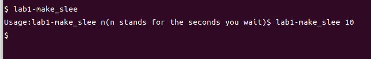

MIT6S081-Online-course 2-lab1
MIT6S081 2
这次，我们着重来完成Lab1的实验要求
尝试调用sleep函数
TASK：Implement the UNIX program sleep for xv6; your sleep should pause for a user-specified number of ticks. A tick is a notion of time defined by the xv6 kernel, namely the time between two interrupts from the timer chip. Your solution should be in the file user/sleep.c.
可以发现，我们的sleep系统调用已经被实现了。这里不过是为了进一步熟悉文件夹结构而设立的：
By the way: MIT6S081已经把提示说的很详细了：
Some hints:
- Before you start coding, read Chapter 1 of the xv6 book.
- Look at some of the other programs in
user/(e.g.,user/echo.c,user/grep.c, anduser/rm.c) to see how you can obtain the command-line arguments passed to a program. - If the user forgets to pass an argument, sleep should print an error message.
- The command-line argument is passed as a string; you can convert it to an integer using
atoi(see user/ulib.c). - Use the system call
sleep. - See
kernel/sysproc.cfor the xv6 kernel code that implements thesleepsystem call (look forsys_sleep),user/user.hfor the C definition ofsleepcallable from a user program, anduser/usys.Sfor the assembler code that jumps from user code into the kernel forsleep. - Make sure
maincallsexit()in order to exit your program. - Add your
sleepprogram toUPROGSin Makefile; once you’ve done that,make qemuwill compile your program and you’ll be able to run it from the xv6 shell. - Look at Kernighan and Ritchie’s book The C programming language (second edition) (K&R) to learn about C.
#include<kernel/types.h>
#include<user/user.h>
// solution I
void main(int argc, char* argv[]){
if(argc != 2){
printf("Usage:%s n(n stands for the seconds you wait)", argv[0]);
exit(1);
}
int ticks = atoi(argv[1]);
sleep(ticks);
exit(0);
} 实现如上，很简单

可以看到这里程序短暂的停止了一会儿。
ping!pong!
Write a program that uses UNIX system calls to ‘’ping-pong’’ a byte between two processes over a pair of pipes, one for each direction. The parent should send a byte to the child; the child should print “user/pingpong.c.
Some hints:
- Use
pipeto create a pipe. - Use
forkto create a child. - Use
readto read from the pipe, andwriteto write to the pipe. - Use
getpidto find the process ID of the calling process. - Add the program to
UPROGSin Makefile. - User programs on xv6 have a limited set of library functions available to them. You can see the list in
user/user.h; the source (other than for system calls) is inuser/ulib.c,user/printf.c, anduser/umalloc.c.
#include "../kernel/types.h"
#include "../user/user.h"
int main(int argc, char **argv)
{
char buf;
// pipefd[0] read end
// pipefd[1] write end
int pipefd[2];
if (pipe(pipefd) == -1)
{
fprintf(2, "Cannot create a pipe\n");
exit(-1);
}
int child_pid = fork();
if (child_pid == -1)
{
fprintf(2, "Cannot fork a child process\n");
exit(-1);
}
// parent process
// 1st: send a byte to child
// 2nd: recv a byte from child
if (child_pid > 0)
{
char p_send = 'a';
write(pipefd[1], &p_send, sizeof(p_send));
close(pipefd[1]);
// wait child exit
wait(0);
read(pipefd[0], &buf, sizeof(buf));
printf("%d: received pong: %c\n", getpid(), buf);
close(pipefd[0]);
}
// child process
// 1st: recv a byte from parent
// 2nd: send a byte to parent
if (child_pid == 0)
{
read(pipefd[0], &buf, sizeof(buf));
printf("%d: received ping: %c\n", getpid(), buf);
char c_send = 'b';
write(pipefd[1], &c_send, sizeof(c_send));
close(pipefd[0]);
close(pipefd[1]);
exit(0);
}
exit(0);
} By the way:这个里面使用到了管道的知识。
（1）父进程创建管道，得到两个文件描述符指向管道的两端
（2）父进程fork出子进程，子进程也有两个文件描述符指向同⼀管道。
（3）父进程关闭fd[0],子进程关闭fd[1]，即父进程关闭管道读端,⼦进程关闭管道写端（因为管道只支持单向通信）。父进程可以往管道⾥写,⼦进程可以从管道⾥读,管道是⽤环形队列实现的,数据从写端流⼊从读端流出,这样就实现了进程间通信。
质数筛
Your goal is to use pipe and fork to set up the pipeline. The first process feeds the numbers 2 through 35 into the pipeline. For each prime number, you will arrange to create one process that reads from its left neighbor over a pipe and writes to its right neighbor over another pipe. Since xv6 has limited number of file descriptors and processes, the first process can stop at 35.
Some hints:
- Be careful to close file descriptors that a process doesn’t need, because otherwise your program will run xv6 out of resources before the first process reaches 35.
- Once the first process reaches 35, it should wait until the entire pipeline terminates, including all children, grandchildren, &c. Thus the main primes process should only exit after all the output has been printed, and after all the other primes processes have exited.
- Hint:
readreturns zero when the write-side of a pipe is closed. - It’s simplest to directly write 32-bit (4-byte)
ints to the pipes, rather than using formatted ASCII I/O. - You should create the processes in the pipeline only as they are needed.
- Add the program to
UPROGSin Makefile.
BYD这个题很难，我尝试了一下后面放弃了，决定当一个面像CP的程序员。但是查看玩思路之后，我发现，他巧妙的利用了进程和管道。换而言之，我们将单轮质数筛选的过程放在子进程和父进程的通信中完成。子进程和父进程反复的提取存活下来的数列中最小的那个数
2可以存活，直接走第一次主线程中for循环的write,第一次开线程的时一read进来就是2，并且打印。然后子 - 父进程传递给下一个循环，子进程则是继续前进，在开完子线程之后成为父进程筛选数据写给子进程后消亡。这个过程就是这样的描述：

#include"kernel/types.h"
#include"user/user.h"
void primeWork(int* pre_fd)
{
close(pre_fd[1]); // close the written part of the father fd
int n, son_pipefd[2]; // init the son_branch pipe, or you can say it forward_pipe
if(pipe(son_pipefd) == -1)
{
fprintf(2, "Failed to init the pipe!");
exit(-1);
}
// what we read is always the first living number
// The smallest number is yet always be a prime
if(read(pre_fd[0], &n, sizeof(int)) == sizeof(int))
{
printf("the prime: %d\n", n);
int child_pid = fork();
if(child_pid != 0)
{
primeWork(son_pipefd); // pass forward the pipe to the next
exit(0);
}
else
{
close(son_pipefd[0]); // do not read, just write info to the son proc that is left to the undivison nums
int temp;
while(read(pre_fd[0], &temp, sizeof(int)) == sizeof(int)) // if previoused leaving is exsited
{
if(temp % n != 0)
{
write(son_pipefd[1], &temp, sizeof(int)); // then write, which pass the current check(undividable)
}
}
close(son_pipefd[1]); // erase and free the proc
exit(0);
}
}
}
int main(int agrc, char* agrv[])
{
int mainPipeFd[2];
if(pipe(mainPipeFd) == -1)
{
fprintf(2, "Failed to init the pipe!");
exit(-1);
}
int child_pid = fork();
if(child_pid == 0)
{
primeWork(mainPipeFd);
exit(0);
}
close(mainPipeFd[0]);
int limit = 35;
if (agrc == 2)
{
limit = atoi(agrv[1]);
}
// on the next step, we are suppose to write all integers to the pipeline
for(int i = 2; i < limit; i++)
{
int curEpochWrittenBytes = 0;
if( (curEpochWrittenBytes = write(mainPipeFd[1], &i, sizeof(int))) != sizeof(int))
{
fprintf(2, "Failed to write precises bytes of ints %d\n", i);
}
}
close(mainPipeFd[1]);
wait(0); // wait all threads end
exit(0);
}相关资源
Bell Labs and CSP Threads
Russ Cox
rsc@swtch.com
Also available in Serbo-Croatian, Swedish
Introduction
This page is a slice of the history of concurrent programming, focusing on one particular lineage of Hoare’s language of communicating sequential processes (CSP) [1] [1a]. Concurrent programming in this style is interesting for reasons not of efficiency but of clarity. That is, it is a widespread mistake to think only of concurrent programming as a means to increase performance, e.g., to overlap disk I/O requests, to reduce latency by prefetching results to expected queries, or to take advantage of multiple processors. Such advantages are important but not relevant to this discussion. After all, they can be realized in other styles, such as asynchronous event-driven programming. Instead, we are interested in concurrent programming because it provides a natural abstraction that can make some programs much simpler.
What this is not
Most computer science undergraduates are forced to read Andrew Birrell’s “An Introduction to Programming with Threads.” The SRC threads model is the one used by most thread packages currently available. The problem with all of these is that they are too low-level. Unlike the communication primitive provided by Hoare, the primitives in the SRC-style threading module must be combined with other techniques, usually shared memory, in order to be used effectively. In general, programmers tend not to build their own higher-level constructs, and are left frustrated by needing to pay attention to such low-level details.
For the moment, push Birrell’s tutorial out of your mind. This is a different thread model. If you approach it as a different thread model, you may well find it much easier to understand.
Communicating Sequential Processes
By 1978, there were many proposed methods in use for communication and synchronization in the context of programming multiprocessors. Shared memory was the most common communication mechanism, and semaphores, critical regions, and monitors were among the synchronization mechanisms. C. A. R. Hoare addressed both issues with a single language primitive: synchronous communication. In Hoare’s CSP language, processes communicate by sending or receiving values from named unbuffered channels. Since the channels are unbuffered, the send operation blocks until the value has been transferred to a receiver, thus providing a mechanism for synchronization.
One of Hoare’s examples is that of reformatting 80-column cards for printing on a 125-column printer. In his solution, one process reads a card at a time, sending the disassembled contents character by character to a second process. This second process assembles groups of 125 characters, sending the groups to the line printer. This sounds trivial, but in the absence of buffered I/O libraries, the necessary bookkeeping involved in a single-process solution is onerous. In fact, buffered I/O libraries are really just encapsulations of these two sorts of processes that export the single-character communication interface.
As another example, which Hoare credits to Doug McIlroy, consider the generation of all primes less than a thousand. The sieve of Eratosthenes can be simulated by a pipeline of processes executing the following pseudocode:
p = get a number from left neighbor
print p
loop:
n = get a number from left neighbor
if (p does not divide n)
send n to right neighborA generating process can feed the numbers 2, 3, 4, …, 1000 into the left end of the pipeline: the first process in the line eliminates the multiples of 2, the second eliminates the multiples of 3, the third eliminates the multiples of 5, and so on:

The linear pipeline nature of the examples thus far is misrepresentative of the general nature of CSP, but even restricted to linear pipelines, the model is quite powerful. The power has been forcefully demonstrated by the success of the filter-and-pipeline approach for which the Unix operating system is well known [2] Indeed, pipelines predate Hoare’s paper. In an internal Bell Labs memo dated October 11, 1964, Doug McIlroy was toying with ideas that would become Unix pipelines: “We should have some ways of coupling programs like garden hose—screw in another segment when it becomes necessary to massage data in another way. This is the way of IO also.” [3]
Hoare’s communicating processes are more general than typical Unix shell pipelines, since they can be connected in arbitrary patterns. In fact, Hoare gives as an example a 3x3 matrix of processes somewhat like the prime sieve that can be used to multiply a vector by a 3x3 square matrix.
Of course, the Unix pipe mechanism doesn’t require the linear layout; only the shell syntax does. McIlroy reports toying with syntax for a shell with general plumbing early on but not liking the syntax enough to implement it (personal communication, 2011). Later shells did support some restricted forms of non-linear pipelines. Rochkind’s 2dsh supports dags; Tom Duff’s rc supports trees.
Hoare’s language was novel and influential, but lacking in a few key aspects. The main defect is that the unbuffered channels used for communication are not first-class objects: they cannot be stored in variables, passed as arguments to functions, or sent across channels. As a result of this, the communication structure must be fixed while writing the program. Hence we must write a program to print the first 1000 primes rather than the first n primes, and to multiply a vector by a 3x3 matrix rather than an nxn matrix.
Pan and Promela
In 1980, barely two years after Hoare’s paper, Gerard Holzmann and Rob Pike created a protocol analyzer called pan that takes a CSP dialect as input. Pan’s CSP dialect had concatenation, selection, and looping, but no variables. Even so, Holzmann reports that “Pan found its first error in a Bell Labs data-switch control protocol on 21 November 1980. ” [14]. That dialect may well have been the first CSP language at Bell Labs, and it certainly provided Pike with experience using and implementing a CSP-like language, his first of many.
Holzmann’s protocol analyzer developed into the Spin model checker and its Promela language, which features first-class channels in the same way as Newsqueak (q.v.).
Newsqueak
Moving in a different direction, Luca Cardelli and Rob Pike developed the ideas in CSP into the Squeak mini-language [4] for generating user interface code. (This Squeak is distinct from the Squeak Smalltalk implementation.) Pike later expanded Squeak into the fully-fledged programming language Newsqueak [5][6] which begat Plan 9’s Alef [7] [8], Inferno’s Limbo [9], and Google’s Go [13]. The main semantic advantage of Newsqueak over Squeak is that Newsqueak treats communications channels as first-class objects: unlike in CSP and Squeak, channels can be stored in variables, passed as arguments to functions, and sent across channels. This in turn enables the programmatic construction of the communication structure, thus allowing the creation of more complex structures than would be reasonable to design by hand. In particular, Doug McIlroy demonstrated how the communication facilities of Newsqueak can be employed to write elegant programs for manipulating symbolic power series [10]. Similar attempts in traditional languages tend to mire in bookkeeping. In a similar vein, Rob Pike demonstrated how the communication facilities can be employed to break out of the common event-based programming model, writing a concurrent window system [11].
Alef
Alef [7] [8] was a language designed by Phil Winterbottom to apply the Newsqueak ideas to a full-fledged systems programming language. Alef has two types of what we have been calling processes: procs and threads. The program is organized into one or more procs, which are shared-memory operating system processes that can be preemptively scheduled. Each proc contains one or more tasks, which are cooperatively scheduled coroutines. Note that each task is assigned to a particular proc: they do not migrate between procs.
The main use of procs is to provide contexts that can block for I/O independently of the main tasks. (Plan 9 has no select call, and even on Unix you need multiple procs if you want to overlap computation with non-network I/O.) The Acme paper [12] has a nice brief discussion of procs and threads, as do the lecture notes about the Plan 9 window system, also mentioned below.
Limbo
The Inferno operating system is a Plan 9 spinoff intended for set-top boxes. Its programming language, Limbo [9], was heavily influenced by Alef. It removed the distinction between procs and tasks, effectively having just procs, though they were of lighter weight than what most people think of as processes. All parallelism is preemptive. It is interesting that despite this, the language provides no real support for locking. Instead, the channel communication typically provides enough synchronization and encourages programmers to arrange that there is always a clear owner for any piece of data. Explicit locking is unnecessary.
Libthread
Back in the Plan 9 world, the Alef compilers turned out to be difficult to maintain as Plan 9 was ported to ever more architectures. Libthread was originally created to port Alef programs to C, so that the Alef compilers could be retired. Alef’s procs and tasks are called procs and threads in libthread. The manual page is the definitive reference.
Go
Rob Pike and Ken Thompson moved on to Google and placed CSP at the center of the Go language‘s concurrency support.
Getting Started
To get a feel for the model, especially how processes and threads interact, it is worth reading the Alef User’s Guide [8]. The first thirty slides of this presentation are a good introduction to how Alef constructs are represented in C.
The best examples of the power of the CSP model are McIlroy’s and Pike’s papers, mentioned above [10] [11].
Rob Pike’s home page contains lecture notes from a course on concurrent programming: an introduction, and slides about the two aforementioned papers: squinting and window system. The last of the three provides a good example of how Plan 9 programs typically use procs and tasks.
Rob Pike gave a tech talk at Google that provides a good introduction (57 minute video).
Rob Pike’s half of his 2010 Google I/O talk with Russ Cox shows how to use channels and Go’s concurrency to implement a load balancing work management system.
Related Resources
John Reppy has applied the same ideas to ML, producing Concurrent ML. He used CML to build, among other things, the eXene multithreaded (non-event-driven) X Window System toolkit.